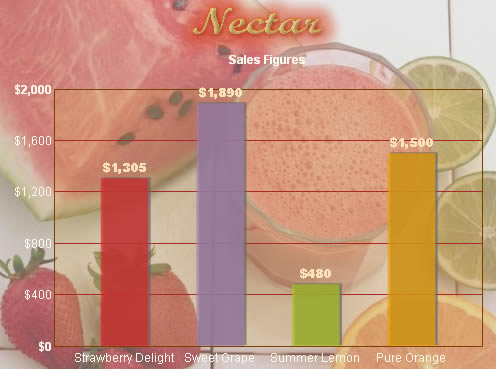

Setting backgrounds for charts |
FusionCharts allows you to easily set a background image/movie for your chart. You can use this option to embed background images (progressive JPEG only) or other SWF Files as your chart background. To embed an image, all you need to do is set bgSWF property of <graph> element as shown below. |
<graph
bgSWF='nectarBg.jpg' canvasBgColor='e4b84b'
canvasBgAlpha='20' canvasBorderColor='7B3F00' canvasBorderThickness='0'
divLineColor='a82925' caption='Sales Figures' baseFont='Arial Black' <set name='Strawberry Delight' value='1305' color='da2625' alpha='70' /> </graph> |
In the above code, we're:
When you view this chart (with the background image), you'll get something as under: |
|  |
Simple and effective - isn't it? For best results, you need to make sure that the background image and your chart have the same dimensions (width and height). Else, the loaded image would align at top left of the chart. |